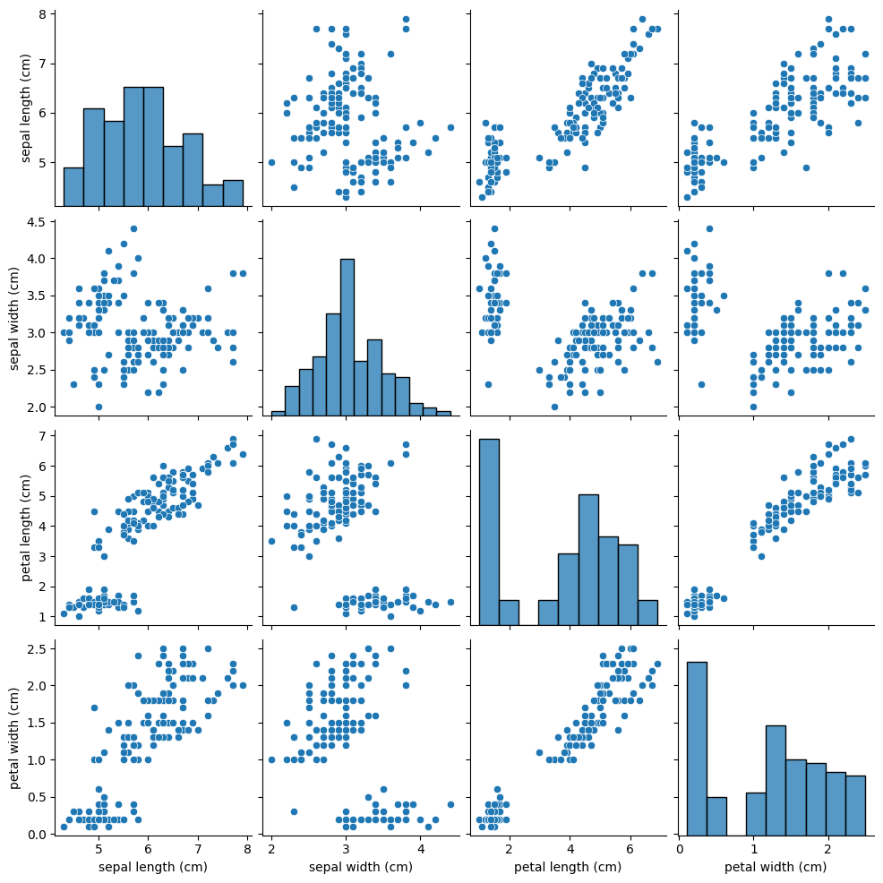
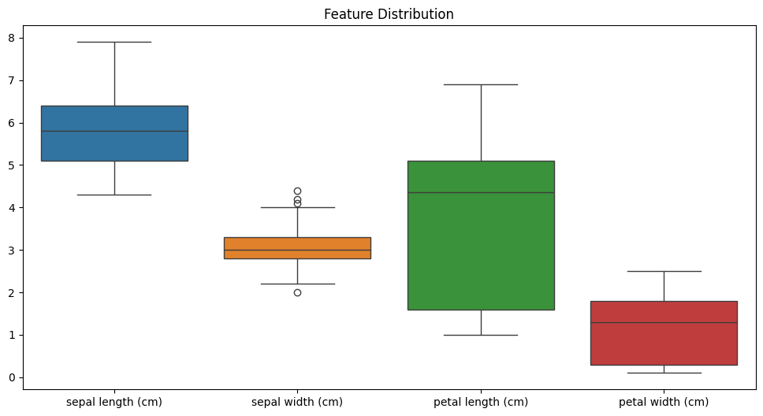
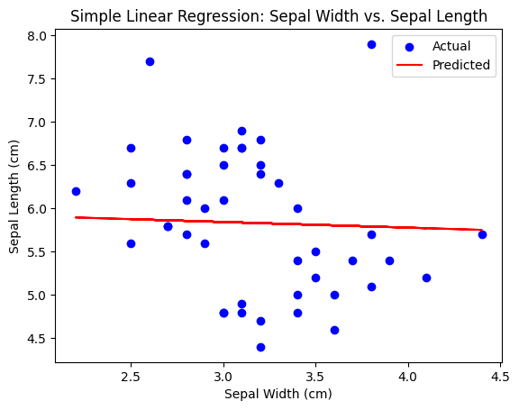
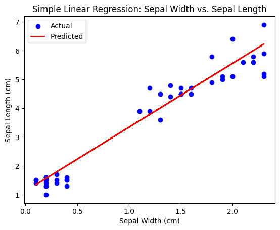
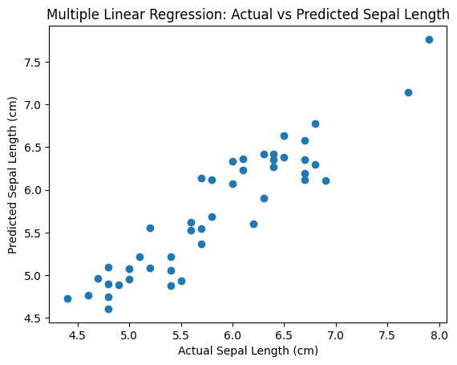

import seaborn as snsimport matplotlib.pyplot as plt# Pairplot to visualize relationships between featuressns.pairplot(iris_df)plt.show()# Add the target (species) to the DataFrame for visualizationiris_df['species'] = iris.target# Visualize the distribution of each feature using a boxplotplt.figure(figsize=(12,6))sns.boxplot(data=iris_df.drop(columns='species'))plt.title('Feature Distribution')plt.show()


from sklearn.model_selection import train_test_splitfrom sklearn.linear_model import LinearRegression# Selecting only Sepal Length and Sepal Width for simple linear regressionX = iris_df[['sepal width (cm)']] # Predictory = iris_df['sepal length (cm)'] # Response# Split the data into training and test setsX_train, X_test, y_train, y_test = train_test_split(X, y, test_size=0.3, random_state=42)# Train the linear regression modellin_reg = LinearRegression()lin_reg.fit(X_train, y_train)# Predict on the test sety_pred = lin_reg.predict(X_test)# Visualize the linear regression fitplt.scatter(X_test, y_test, color='blue', label='Actual')plt.plot(X_test, y_pred, color='red', label='Predicted')plt.title('Simple Linear Regression: Sepal Width vs. Sepal Length')plt.xlabel('Sepal Width (cm)')plt.ylabel('Sepal Length (cm)')plt.legend()plt.show()

from sklearn.model_selection import train_test_splitfrom sklearn.linear_model import LinearRegression# Selecting only Petal Length and Petal Width for simple linear regressionX = iris_df[['petal width (cm)']] # Predictory = iris_df['petal length (cm)'] # Response# Split the data into training and test setsX_train, X_test, y_train, y_test = train_test_split(X, y, test_size=0.3, random_state=42)# Train the linear regression modellin_reg = LinearRegression()lin_reg.fit(X_train, y_train)# Predict on the test sety_pred = lin_reg.predict(X_test)# Visualize the linear regression fitplt.scatter(X_test, y_test, color='blue', label='Actual')plt.plot(X_test, y_pred, color='red', label='Predicted')plt.title('Simple Linear Regression: Sepal Width vs. Sepal Length')plt.xlabel('Sepal Width (cm)')plt.ylabel('Sepal Length (cm)')plt.legend()plt.show()

# All features (excluding target/species) as predictorsX = iris_df.drop(columns=['species', 'sepal length (cm)'])y = iris_df['sepal length (cm)']# Split the dataX_train, X_test, y_train, y_test = train_test_split(X, y, test_size=0.3, random_state=42)# Train the multiple linear regression modelmlr = LinearRegression()mlr.fit(X_train, y_train)# Predict on the test sety_pred = mlr.predict(X_test)# Calculate performance metrics (optional)from sklearn.metrics import mean_squared_error, r2_scoreprint(f"Mean Squared Error: {mean_squared_error(y_test, y_pred)}")print(f"R-squared: {r2_score(y_test, y_pred)}")# Visualize actual vs predictedplt.scatter(y_test, y_pred)plt.title('Multiple Linear Regression: Actual vs Predicted Sepal Length')plt.xlabel('Actual Sepal Length (cm)')plt.ylabel('Predicted Sepal Length (cm)')plt.show()# Print the equation of the multiple linear regression modelintercept = mlr.intercept_coefficients = mlr.coef_# Feature names (excluding the response variable and species)features = iris_df.columns.drop(['species', 'sepal length (cm)'])# Construct the regression equation as a stringequation =f"Sepal Length = {intercept:.2f}"for feature, coef inzip(features, coefficients): equation +=f" + ({coef:.2f} * {feature})"# Print the regression equationprint("The equation for multiple linear regression:")print(equation)
Mean Squared Error: 0.09811742166101381
R-squared: 0.8525836334296238

The equation for multiple linear regression:
Sepal Length = 1.76 + (0.66 * sepal width (cm)) + (0.76 * petal length (cm)) + (-0.69 * petal width (cm))